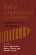
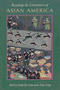
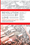

Browse
other Titles:
A B C
D E F
G H I
J K L
M N O
P Q R
S T U
V W X
Y Z |
 |
Race Appeal
How Candidates Invoke Race in U.S. Political Campaigns
McIlwain, Charlton D. and Stephen M. Caliendo
272 pp • 6x9 • Spring 2011
paper 978-1-4399-0276-9
cloth 978-1-4399-0275-2
|
 |
Race and Class Matters at an Elite College
Aries, Elizabeth
246 pp • 6x9 • Fall 2008
paper 978-1-59213-726-8
cloth 978-1-59213-725-1
|
 |
Race
and Mixed Race
Zack,
Naomi
232 pp • 6x9 • Fall 1993
paper 978-1-56639-265-5
cloth 978-1-56639-064-4 |
|
Race
Relations in Wartime Detroit
The Sojourner Truth Housing Controversy, 1937-1942
Capeci,
Jr., Dominic J.
Spring 1984
cloth 978-0-87722-339-9 |
 |
Race,
Gender, and Desire
Narrative Strategies in the Fiction of Toni Cade Bambara, Toni
Morrison, and Alice Walker
Butler-Evans,
Elliott
232 pp • Spring 1989
paper 978-0-87722-831-8
cloth 978-0-87722-608-6 |

|
Racial Feelings
Asian America in a Capitalist Culture of Emotion
Santa Ana, Jeffrey
272 pp • 6x9
• Spring 2015
paper 978-1-4399-1193-8
cloth 1 978-1-4399-1192-1 |
|
The
Racial Logic of Politics
Asian Americans and Party Competition
Kim, Thomas P.
208 pp • 6x9 • Fall 2006
paper 978-1-59213-549-3
cloth 978-1-59213-548-6
|
 |
Radical
Philosophy
Tradition, Counter-Tradition, Politics
edited
by Gottlieb, Roger S.
304 pp • 6x9 • Spring 1993
paper 978-1-56639-047-7
cloth 978-1-56639-046-0 |
|  |
Radical
Sociologists and the Movement
Experiences, Lessons, and Legacies
edited
by Oppenheimer, Martin, Martin J. Murray and Rhonda F. Levine
256 pp • Fall 1990
cloth 978-0-87722-745-8 |
|
Rain
Without Thunder
The Ideology of the Animal Rights Movement
Francione,
Gary L.
288 pp • 6x9 • Fall 1996
paper 978-1-56639-461-1
cloth 978-1-56639-460-4
|

|
Rave Culture
The Alteration and Decline of a Philadelphia Music Scene
Anderson, Tammy L.
240 pp • 6x9 • Spring 2009
paper 978-1-59213-934-7
cloth 978-1-59213-933-0
|
 |
Re-Viewing
James Baldwin
Things Not Seen
edited
by Miller, D. Quentin, foreword by David Adams Leeming
312 pp • 6x9 • Fall 1999
paper 978-1-56639-737-7
cloth 978-1-56639-736-0
|
 |
Re/collecting
Early Asian America
Essays in Cultural History
edited
by Lee, Josephine, Imogene L. Lim and Yuko Matsukawa
384 pp • 7x10 • Spring 2002
paper 978-1-56639-964-7
cloth 978-1-56639-963-0
|
 |
Reading
Rousseau in the Nuclear Age
Roosevelt,
Grace G.
288 pp • Spring 1990
cloth 978-0-87722-679-6 |
|  |
Reading
the Literatures of Asian America
edited
by Lim, Shirley Geok-lin and Amy Ling
384 pp • 6x9 • Fall 1992
paper 978-0-87722-936-0
cloth 978-0-87722-935-3
|

|
Reading Up
Middle-Class Readers and the Culture of Success in the Early Twentieth-Century United States
Blair, Amy L.
264 pp • 6x9 • Fall 2011
paper 978-1-4399-0668-2
cloth 978-1-4399-0667-5
|
 |
Readings
in American Indian Law
Recalling the Rhythm of Survival
edited
by Carrillo, Jo
353 pp • 7x10 • Fall 1997
paper 978-1-56639-582-3
cloth 978-1-56639-581-6
|
 |
Rebels
Against War
The American Peace Movement, 1933-1983
Wittner,
Lawrence S.
Spring 1984
paper 978-0-87722-342-9 |
|
Rebuilding Community after Katrina
Transformative Education in the New Orleans Planning Initiative
edited by Reardon, Ken and John Forester
296 pp • 6x9 • Fall 2015
paper 978-1-4399-1100-6
cloth 978-1-4399-1099-3 |
 |
Rebuilding
a Low-Income Housing Policy
Bratt,
Rachel G.
368 pp • Spring 1989
paper 978-1-56639-263-1
cloth 978-0-87722-595-9 |
|
Rebuilding the News
Metropolitan Journalism in the Digital Age
Anderson, C.W.
236 pp • 6x9 • Fall 2012
paper 978-1-4399-0934-8
cloth 978-1-4399-0933-1 |

|
Recasting Welfare Capitalism
Economic Adjustment in Contemporary France and Germany
Vail, Mark I.
248 pp • 6x9 • Fall 2009
cloth 978-1-59213-967-5
|
|
Reclaiming
Class
Women, Poverty, and the Promise of Higher Education in America
edited
by Adair, Vivyan C. and Sandra L. Dahlberg
280 pp • 6x9 • Spring 2003
paper 978-1-59213-022-1
cloth 978-1-59213-021-4
|
 |
The
Reconquest of Montreal
Language Policy and Social Change in a Bilingual City
Levine,
Marc V.
320 pp • Spring 1990
paper 978-0-87722-899-8
cloth 978-0-87722-703-8 |
 |
Reconstructing
Prehistory
Scientific Method in Archaeology
Bell,
James A.
368 pp • 6x9 • Spring 1994
paper 978-1-56639-160-3
cloth 978-1-56639-159-7
|
 |
Recovered
Legacies
Authority and Identity in Early Asian American Literature
edited
by Lawrence, Keith and Floyd Cheung
320 pp • 6x9 • Spring 2005
paper 978-1-59213-119-8
cloth 978-1-59213-118-1
|
 |
The
Red Atlantis
Communist Culture in the Absence of Communism
Hoberman,
J.
326 pp • 5x9 • Fall 1998
paper 978-1-56639-767-4
cloth 978-1-56639-643-1
|
 |
Red War on the Family
Sex, Gender, and Americanism in the First Red Scare
Ryan, Erica J.
New in Paperback!
232 pp • 6x9 • Fall 2016
paper 978-1-4399-0885-3
cloth 978-1-43990-884-6 |

|
The Redskins Encyclopedia
Richman, Michael, foreword by Dexter Manley
432 pp • 8.315x10.875 • Fall 2007
cloth 978-1-59213-542-4
|
|
Reducing
Workweeks to Prevent Layoffs
The Economic and Social Impacts of Unemployment Insurance-Supported
Work Sharing
Best,
Fred, foreword by Herbert J. Gans
228 pp • Fall 1987
cloth 978-0-87722-506-5 |

|
Refounding Environmental Ethics
Pragmatism, Principle, and Practice
Minteer, Ben A.
212 pp • 6x9 • Fall 2011
paper 978-1-4399-0084-0
cloth 978-1-4399-0083-3
|
 |
Reframings
New American Feminist Photographies
edited
by Neumaier, Diane, foreword by Anne Wilkes Tucker
336 pp • 8.5x10 • Fall 1995
paper 978-1-56639-332-4
cloth 978-1-56639-331-7
|
 |
Reframing Transracial Adoption
Korean Adoptees, White Parents and the Politics of Kinship
Brian, Kristi
230 pp • 6x9 • Spring 2012
paper 978-1-4399-0184-7
cloth 978-1-4399-0183-0 |
 |
Regarding
Animals
Arluke,
Arnold and Clinton R. Sanders
256 pp • 5.5x8.25 • Spring 1996
paper 978-1-56639-441-3
cloth 978-1-56639-440-6
|
 |
Reggae
Routes
The Story of Jamaican Music
Chang,
Kevin O'Brien and Wayne Chen
256 pp • 6.75x9.25 • Spring 1998
paper 978-1-56639-629-5
|
|
The
Regulation of Sexuality
Experiences of Family Planning Workers
Joffe,
Carole
208 pp • Fall 1987
paper 978-0-87722-510-2
cloth 978-0-87722-423-5 |
 |
Reimagining Courts
A Design for the Twenty-First Century
Flango, Victor E. and Thomas M. Clarke
New in Paperback!
230 pp • 5.5x8.25 • Spring 2017
paper 978-1-4399-1168-6
cloth 978-1-43991-167-9 |
|
Reinventing
Cities
Equity Planners Tell Their Stories
Krumholz,
Norman and Pierre Clavel
272 pp • 6x9 • Fall 1994
paper 978-1-56639-210-5
cloth 978-1-56639-209-9 |
 |
Religion
and Cultural Freedom
Adams,
E. M.
208 pp • 6x9 • Fall 1993
cloth 978-1-56639-051-4
|
|
Religion
and Economic Justice
edited
by Zweig, Michael
272 pp • 6x9 • Fall 1991
paper 978-1-56639-003-3
cloth 978-0-87722-847-9 |

|
Religion and Political Tolerance in America
Advances in the State of the Art
edited by Djupe, Paul A.
270 pp • 6x9 • Spring 2015
paper 978-1-4399-1233-1
cloth 978-1-4399-1232-4 |
|
Religion
and Radical Politics
An Alternative Christian Tradition in the United States
Craig,
Robert H.
320 pp • 6x9 • Fall 1992
paper 978-1-56639-335-5
cloth 978-0-87722-973-5
|
 |
The
Religious Challenge to the State
edited
by Moen, Matthew C. and Lowell S. Gustafson
320 pp • Fall 1991
cloth 978-0-87722-856-1 |
 |
Remaking
the Welfare State
Retrenchment and Social Policy in America and Europe
edited
by Brown, Michael K.
320 pp • Spring 1988
cloth 978-0-87722-541-6 |

|
The Renewal of Cultural Studies
edited by Smith, Paul
272 pp • 6x9 • Fall 2011
paper 978-1-4399-0253-0
cloth 978-1-4399-0252-3
|

|
Resentment's Virtue
Jean Améry and the Refusal to Forgive
Brudholm, Thomas, foreword by Jeffrie Murphy
256 pp • 6x9 • Fall 2007
paper 978-1-59213-567-7
cloth 978-1-59213-566-0
|
 |
Reshaping
Ethnic and Racial Relations in Philadelphia
Immigrants in a Divided City
Goode,
Judith and Jo Anne Schneider
296 pp • 6x9 • Spring 1994
paper 978-1-56639-141-2
cloth 978-1-56639-140-5
|
|
Resisting
Images
Essays on Cinema and History
edited
by Sklar, Robert and Charles Musser
320 pp • Fall 1990
paper 978-0-87722-738-0
cloth 978-0-87722-731-1 |
 |
Resurrecting Slavery
Racial Legacies and White Supremacy in France
Fleming, Crystal Marie
292 pp • 6x9 • Fall 2016
paper 978-1-4399-1409-0
cloth 978-1-4399-1408-3 |
 |
Resisting Work
The Corporatization of Life and Its Discontents
Fleming, Peter
210 pp • 5.5x8.25 • Spring 2014
paper 978-1-4399-1113-6
cloth 978-1-4399-1112-9 |
 |
Restructuring the Philadelphia Region
Metropolitan Divisions and Inequality
Adams, Carolyn, David W. Bartelt, David Elesh and Ira Goldstein with Michelle Schmitt and Joshua Freely
248 pp • 6x9 • Fall 2008
paper 978-1-59213-897-5
cloth 978-1-59213-896-8
|
 |
Rethinking
College Athletics
edited
by Andre, Judith and David N. James
257 pp • 6x9 • Fall 1990
paper 978-1-56639-002-6
cloth 978-0-87722-716-8
|
 |
Rethinking
Protestantism in Latin America
edited
by Garrard-Burnett, Virginia and David Stoll
240 pp • 5.5x8.25 • Fall 1993
paper 978-1-56639-103-0
cloth 978-1-56639-102-3
|
 |
Rethinking
Rental Housing
Gilderbloom,
John I. and Richard P. Appelbaum, foreword by Joe R. Feagin
296 pp • Fall 1987
paper 978-0-87722-538-6
cloth 978-0-87722-498-3 |
 |
Rethinking
Sex
Social Theory and Sexuality Research
edited
by Connell, R. W. and G. W. Dowsett
192 pp • 5.5x8.25 • Spring 1993
paper 978-1-56639-073-6
cloth 978-1-56639-072-9
|
 |
Rethinking
the Cold War
edited
by Hunter, Allen
320 pp • 6x9 • Fall 1997
paper 978-1-56639-562-5
cloth 978-1-56639-561-8
|
|
Retribution
Evil for Evil in Ethics, Law, and Literature
Henberg,
Marvin
288 pp • Fall 1990
cloth 978-0-87722-724-3 |
 |
Return
of Guatemala's Refugees
Reweaving the Torn
Taylor,
Clark
248 pp • 5.5x8.2 • Spring 1998
paper 978-1-56639-622-6
cloth 978-1-56639-621-9
|
 |
Return
of the Indian
Conquest and Revival in the Americas
Wearne,
Phillip, foreword by Rigoberta Menchu
264 pp • 7.5x9.5 • Fall 1996
paper 978-1-56639-501-4
cloth 978-1-56639-500-7 |
|
Revelation
in Religious Belief
Mavrodes,
George I.
168 pp • Spring 1988
cloth 0-87722-545-1
EAN 978-0-87722-545-4 |
 |
Reverse Engineering Social Media
Software, Culture, and Political Economy in New Media Capitalism
Gehl, Robert W.
226 pp • 5.5x8.25 • Spring 2014
paper 978-1-4399-1035-1
cloth 978-1-4399-1034-4 |
|
Revising
State Theory
Essays in Politics and Postindustrialism
Block,
Fred
256 pp • Fall 1987
paper 978-0-87722-524-9
cloth 978-0-87722-465-5
|
|
Revolution
A Sociological Interpretation
Kimmel,
Michael S.
294 pp • Spring 1990
paper 978-0-87722-741-0
cloth 978-0-87722-736-6 |
|  |
Revolution By Love
edited by Ghandour, Dala, Emna Ben Yedder, Mohammed Masbah and Steve Parks
194 pp • 5x7 • Spring 2014
cloth 978-0-98404-299-9 |
 |
A
Revolution of the Heart
Essays on the Catholic Worker
edited
by Coy, Patrick G., foreword by Jim Douglass
408 pp • Spring 1988
cloth 978-0-87722-531-7 |
 |
Revolutionary
Passage
From Soviet to Post-Soviet Russia, 1985-2000
Garcelon,
Marc
328 pp • 6x9 • Spring 2005
paper 978-1-59213-362-8
cloth 978-1-59213-361-1
|
|
A
Right to Housing
Foundation for a New Social Agenda
edited
by Bratt, Rachel G., Michael E. Stone and Chester Hartman 448
pp • 7x10 • Fall 2005
paper 978-1-59213-432-8
cloth 978-1-59213-431-1
|
 |
The
Right to Privacy
Gays, Lesbians, and the Constitution
Samar,
Vincent J.
260 pp • Spring 1991
paper 978-0-87722-952-0
cloth 978-0-87722-796-0 |
 |
The
Rise of Historical Sociology
Smith,
Dennis
244 pp • 6x9 • Spring 1992
paper 978-0-87722-920-9
cloth 978-0-87722-919-3 |
|
The Risk Society Revisited
Social Theory and Governance
Rosa, Eugene A., Ortwin Renn and Aaron M. McCright
264 pp • 6x9 • Fall 2013
paper 978-1-4399-0259-2
cloth 978-1-4399-0258-5 |
 |
Risking Life and Lens
A Photographic Memoir
Stummer,
Helen M.
246 pp • 6.125x9.25 • Fall 2016
paper 978-1-4399-1457-1
cloth 978-1-4399-1456-4 |
 |
Rites
of Assent
Two Novellas
Qasim,
Abd al-Hakim, translated by Peter Theroux, introduction by Samia
Mehrez
192 pp • 5.5x8.25 • Spring 1995
paper 978-1-56639-354-6
cloth 978-1-56639-353-9
|
 |
Robert
Kennedy
Brother Protector
Hilty,
James W.
672 pp • 6x9 • Spring 2000
paper 978-1-56639-766-7
cloth 978-1-56639-566-3
|
 |
Rookies
of the Year
Bloss,
Bob
224 pp • 6x9 • Spring 2005
cloth 978-1-59213-164-8
|
 |
The
Roots of Community Organizing, 1917-1939
Betten,
Neil and Michael J. Austin, contributions by Robert Fisher,
William E. Hershey, Raymond A. Hohl and Marc Lee Raphael
230 pp • 5.5x8.25 • Fall 1989
cloth 978-0-87722-662-8
|
 |
The
Roots of Thinking
Sheets-Johnstone,
Maxine
408 pp • Fall 1990
paper 978-0-87722-769-4
cloth 978-0-87722-711-3 |
|
Roy
Orbison
The Invention of an Alternative Rock Masculinity
Lehman,
Peter
224 pp • 6x9 • Spring 2003
paper 978-1-59213-037-5
cloth 978-1-59213-036-8
|
 |
Rubble
Films
German Cinema in the Shadow of the Third Reich
Shandley,
Robert R.
240 pp • 6x9 • Spring 2001
paper 978-1-56639-878-7
cloth 978-1-56639-877-0
|

|
Rude Democracy
Civility and Incivility in American Politics
Herbst, Susan
216 pp • 5.5x8.25 • Fall 2010
cloth 978-1-4399-0335-3
|
 |
The
Rule of Racialization
Class, Identity, Governance
Martinot,
Steve
256 pp • 7x10 • Fall 2002
paper 978-1-56639-982-1
cloth 978-1-56639-981-4
|
 |
Rulers and Capital in Historical Perspective
State Formation and Financial Development in India and the United States
Chatterjee, Abhishek
188 pp • 5.5x8.25 • Fall 2017
cloth 978-1-4399-1500-4
|
|
Rules
for Rulers
The Politics of Advice
Meltsner,
Arnold J.
208 pp • Spring 1990
cloth 978-0-87722-685-7 |

|
Runaway Romances
Hollywood's Postwar Tour of Europe
Shandley, Robert R.
234 pp • 6x9 • Spring 2009
cloth 978-1-59213-945-3
|
|
Running
for Freedom
Civil Rights and Black Politics in White America, 1941-1988
Lawson,
Steven F.
320 pp • Fall 1990
cloth 978-0-87722-792-2 |
 |
Running
Scared
Masculinity and the Representation of the Male Body
Lehman,
Peter
256 pp • 6.5x9.25 • Fall 1993
paper 978-1-56639-222-8
cloth 978-1-56639-099-6
|